용접기사 (2020-06-06 기출문제)
1과목: 기계제작법
1. 주조공정에서 주물의 살두께 6mm, 주물의 중량이 1000kg일 때 쇳물의 주입시간은 약 몇 초인가? (단, 주물 두께에 따른 계수는 1.86이다.)
- 58.82
- 59.62
- 60.23
- 61.45
(정답률: 33%)

2. 구성인선(buily-up edge)이 발생하는 것을 방지하기 위한 대책은?
- 경사각을 작게 한다.
- 절삭깊이를 작게 한다.
- 절삭속도를 작게 한다.
- 절삭공구의 인선을 무디게 한다.
(정답률: 41%)
3. 특수성형에 의한 소성가공에서 다이에 금속을 사용하는 대신 고무를 사용하는 성형 가공방법은?
- 마폼법(marforming)
- 인장성형법(stretch forming)
- 폭발성형법(explosive forming)
- 하이드로폼법(hydroform process)
(정답률: 44%)
4. 수기가공 중 수나사 작업을 위한 다이스의 종류 및 용도로 틀린 것은?
- 단체 다이스 - 지름 조절이 불가능
- 분할 다이스 - 지름조절이 가능
- 날 붙이 다이스 - 대형나사의 가공이 가능
- 스파이럴 다이스 - 소형나사의 가공이 가능
(정답률: 38%)
5. 기어 가공법 중 인벌류트 치형을 정확하게 가공할 수 있는 방법으로 래크 커터 또는 호브를 이용한 가공방법은?
- 선반에 의한 절삭법
- 형판에 의한 절삭법
- 창성에 의한 절삭법
- 총형커터에 의한 절삭법
(정답률: 34%)
6. 주물 중심까지의 응고시간(t), 주물의 체적(V)과 표면적(S) 사이의 관계식으로 옳은 것은?
- t∝V/√S
- t∝(V/S)2
- t∝(1/SV)
- t∝(1/V√S)3
(정답률: 39%)
7. 공작기계의 에이프런(apron)에서 하프너트의 용도로 옳은 것은?
- 선반에서 나사가공을 할 때
- 세이퍼에서 키홈 가공을 할 때
- 보링 머신에서 구멍을 가공할 때
- 밀링 머신에서 기어을 가공할 때
(정답률: 21%)
8. 다음 중 고체침탄법의 특징으로 옳지 않은 것은?
- 설비비가 저렴하다.
- 작업환경이 양호하다.
- 소량생산에 적합하다.
- 큰 부품의 처리가 가능하다.
(정답률: 27%)
9. 다음 중 절삭온도를 측정하는 방법이 아닌 것은?
- 열전대에 의한 방법
- 칩의 색에 의한 방법
- 시온 도료에 의한 방법
- 공구동력계를 사용하는 방법
(정답률: 50%)
10. 금속표면을 경화시키기 위한 것으로 금속표면에 알루미늄을 고온에서 확산 침투시키는 방법은?
- 칼로라이징
- 세라다이징
- 크로마이징
- 브로나이징
(정답률: 64%)
11. 절삭 중 발생되는 칩이 절삭공구에 달라붙어 경사면에서의 흐름이 원활하지 못하고 연성이 큰 재질의 공작물을 깊은 절입량으로 가공할 때 생성되는 칩의 형태로 옳은 것은?
- 균열형 칩
- 유동형 칩
- 전단형 칩
- 열단형 칩
(정답률: 22%)
12. 선반의 부속장치 중 방진구에 관한 설명으로 틀린 것은?
- 이동식 방진구의 고정은 새들에 한다.
- 고정식 방진구의 고정은 베드에 한다.
- 이동식 방진구의 조(jaw)는 2개이다.
- 고정식 방진구의 조(jaw)는 2개이다.
(정답률: 35%)
13. 오버 핀법은 다음 중 어느 것을 측정하는 것인가?
- 공작기계의 정밀도
- 기어의 이두께
- 더브테일의 각도
- 수나사의 골지름
(정답률: 23%)
14. 초경합금 공구를 원통 연삭할 때 일반적으로 사용하는 숫돌입자로 가장 적합한 것은?
- A
- C
- WA
- GC
(정답률: 36%)
15. 테르밋 용접의 특징으로 틀린 것은?
- 용접작업이 단순하며, 기술 습득이 용이하다.
- 용접 기구가 간단하며 설비비가 저렴하다.
- 용접시간이 짧고, 용접 후 변형이 많이 발생한다.
- 용접 이음부는 특별한 모양의 홈을 필요로 하지 않는다.
(정답률: 52%)
16. CNC선방에서 지름 50mm인 소재를 절삭속도 62.8m/min, 절삭깊이 5mm, 길이 400mm를 절삭할 때 소요되는 가공 시간은 약 몇 분인가? (단, 이송속도는 0.2mm/rev다.)
- 1
- 3
- 5
- 7
(정답률: 24%)
17. 소성가공 중 압출공정에서의 결함 종류로 옳지 않은 것은?
- 표면균열
- 파이프결함
- 정수압결함
- 내부균열
(정답률: 25%)
18. 입자가공 중 센터리스 연삭의 특징에 관한 설명으로 옳지 않은 것은?
- 연삭에 숙련을 필요로 한다.
- 중공의 가공물을 연삭할 때 편리하다.
- 가늘고 긴 가공물의 연삭에 적합하다.
- 연삭 숫돌의 폭이 크므로 숫돌지름의 마멸이 적고, 수명이 길다.
(정답률: 30%)
19. 다음 중 불활성 가스 아크용접에 사용되는 불활성 가스만으로 나열된 것은?
- 수소, 네온
- 크립톤, 산소
- 헬륨, 아르곤
- 크세논, 아세틸렌
(정답률: 68%)
20. 레이저 가공기 중 발진 재료에 따른 종류로 틀린 것은?
- YAG 레이저 가공기
- H2O 레이저 가공기
- CO2 레이저 가공기
- 엑시머 레이저 가공기
(정답률: 30%)
2과목: 재료역학
21. 그림과 같은 빗금 친 단면을 갖는 중공축이 있다. 이 단면의 O점에 관한 극단면 2차모멘트는?
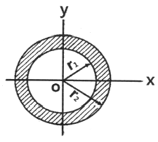
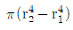
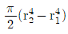
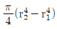
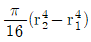
(정답률: 22%)
22. 그림과 같은 균일 단면의 돌출보에서 반력 RA는? (단, 보의 자중은 무시한다.)
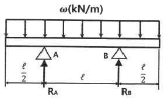
- ωℓ
- ωℓ/4
- ωℓ/3
- ωℓ/2
(정답률: 21%)
23. 그림과 같이 길고 얇은 평판이 평면 변형률 상태로 σx를 받고 있을 때, εx는?
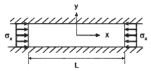
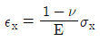
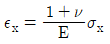
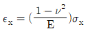
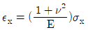
(정답률: 27%)
24. 지름 300mm의 단면을 가진 속이 찬 원형보가 굽힘을 받아 최대 굽힘 음력이 100MPa이 되었다. 이 단면에 작용한 굽힘 모멘트는 약 몇 kNㆍm인가?
- 265
- 315
- 360
- 425
(정답률: 15%)
25. 단면적이 4cm2인 강봉에 그림과 같은 하중이 작용하고 있다. W=60kN, P=25kN, ℓ=20㎝일 때 BC 부분의 변형률 ε은 약 얼마인가? (단, 세로탄성계수는 200GPa이다.)
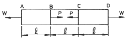
- 0.00043
- 0.0043
- 0.043
- 0.43
(정답률: 16%)
26. 동일한 길이와 재질로 만들어진 두 개의 원형단면 축이 있다. 각각의 지름이 d1, d2 일때 각 축에 저장되는 변형에너지 u1, u2의 비는? (단, 두 축은 모두 비틀림 모멘트 T를 받고 있다.)
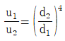
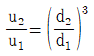
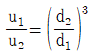
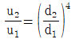
(정답률: 18%)
27. 철도 레일의 온도가 50℃에서 15℃로 떨어졌을 때 레일에 생기는 열응력은 약 몇 MPa인가? (단, 선팽찬계수는 0.00012/℃, 세로탄성계수는 210GPa이다.)
- 4.41
- 8.82
- 44.1
- 88.2
(정답률: 17%)
28. 직사각형 단면의 단주에 150kN하중이 중심에서 1m만큼 편심되어 작용할 때 이 부재 BD에서 생기는 최대 압축응력은 약 몇 kPa인가?
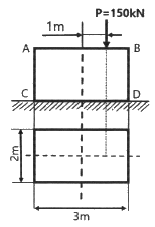
- 25
- 50
- 75
- 100
(정답률: 14%)
29. 그림의 평면응력상태에서 최대 주응력은 약 몇 MPa인가? (단, σx=175MPa, σy=35MPa, τxy=60MPa이다.)
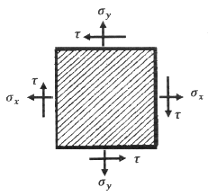
- 92
- 1⑤
- 163
- 197
(정답률: 18%)
30. 그림과 같이 외팔보의 중앙에 집중하중 P가 작용하는 경우 집중하는 P가 작용하는 지점에서의 처짐은? (단, 보의 굽힘강성 EI는 일정하고, L은 보의 전체의 길이다.)
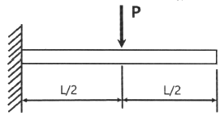
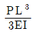
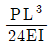
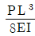
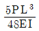
(정답률: 5%)
31. 그림과 같은 단면을 가진 외팔보가 있다. 그 단면의 자유단에 전단력 V=40kN이 발생한다면 단면 a-b 위에 발생하는 전단응력은 약 MPa인가?
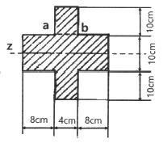
- 4.75
- 4.22
- 3.87
- 3.14
(정답률: 16%)
32. 그림과 같은 트러스 구조물에서 B점에서 10kN의 수직 하중을 받으면 BC에 작용하는 힘은 몇 kN인가?
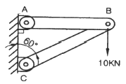
- 20
- 17.32
- 10
- 8.66
(정답률: 19%)
33. 양단이 고정된 축을 그림과 같이 m-n단면에서 T만큼 비틀면 고정단 AB에서 생기는 저항 비틀림 모멘트의 비 TA/TB는?
- b2/a2
- b/a
- a/b
- a2/b2
(정답률: 20%)
34. 전체길이가 L이고, 일단 지지 및 타단 고정보에서 삼각형 분포 하중이 작용할 때, 지지점 A에서의 잔력은? (단, 보의 굽힘강성 EI는 일정하다.)
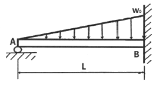
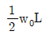
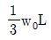
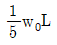
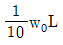
(정답률: 20%)
35. 원형 봉에 축방향 인장하중 P=88kN이 작용할 때, 직경의 김소량은 약 몇 mm인가? (단, 봉은 길이 L=2m, 직경 d=40mm, 세로탄성계수는 70GPa, 포아송비 μ=0.3이다.)
- 0.006
- 0.012
- 0.018
- 0.036
(정답률: 14%)
36. 오일러 공식이 세장비
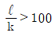
에 대해 성립한다고 할 때, 양단이 힌지인 원형단면 기중에서 오일러 공식이 성립하기 위한 길이 “ℓ”과 지름 “d” 와의 관계가 옳은 것은? (단, 단면의 회전반경을 K라 한다.)- ℓ ＞ 4d
- ℓ ＞ 25d
- ℓ ＞ 50d
- ℓ ＞ 100d
(정답률: 25%)
37. 원형단면 축에 147kW의 동력을 회전수 2000rpm으로 전달시키고자 한다. 축 지름은 약 몇 ㎝로 해야 하는가? (단, 허용전단응력은 τw=50MPa이다.)
- 4.2
- 4.6
- 8.5
- 9.9
(정답률: 7%)
38. 지름 D인 두께가 얇은 링(ring)을 수평면 내에서 회전 시킬 때, 링에 생기는 인장응력을 나타내는 식은? (단, 링의 단위 길이에 대한 무게를 W, 링의 원주속도를 V, 링의 단면적을 A, 중력 가속도를 g로 한다.)
- WV2/DAg
- WDV2/Ag
- WV2/Ag
- WV2/Dg
(정답률: 27%)
39. 외팔보의 자유단에 연직 방향으로 10kN의 집중 하중이 작용하면 고정단네 생기는 굽횜응력은 약 몇 MPa인가? (단, 단면(폭×높이)b×h=10㎝×15㎝, 길이 1.5m이다.)
- 0.9
- 5.3
- 40
- 100
(정답률: 24%)
40. 그림과 같이 양단에서 모멘트가 작용할 경우 A지점늬 처짐각 θA는? (단, 보의 굽힘 강성 EI는 일정하고, 자중은 무시한다.)
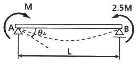
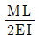
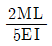
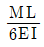
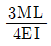
(정답률: 23%)
3과목: 용접야금
41. 탄소강의 성질 중 탄소 함유량이 증가함에 따라 증가하는 성질은?
- 비열
- 용융점
- 열팽창률
- 비중
(정답률: 23%)
42. 다음 중 탈산제의 원료의 가장 거리가 먼 것은?
- 페로망간
- 일미나이트
- 페로실리콘
- 알루미늄 분말
(정답률: 43%)
43. 용정과정에서 화학반응의 특성으로 옳은 것은?
- 온도가 높고 시간이 길다.
- 온도가 낮고 시간이 길다.
- 온도가 낮고 시간이 짧다.
- 온도가 높고 시간이 짧다.
(정답률: 44%)
44. 다음 중 백금-백금로듐 열전대로 높은 온도를 측정하는데 적합한 열전대는?
- R-type
- K-type
- J-type
- T-type
(정답률: 29%)
45. 금속 내 격자결함에서 점결함에 속하는 것은?
- 결정립계
- 전위
- 적층결함
- 공공
(정답률: 43%)
46. 탄소강 중에서 인(P)이 미치는 영향으로 틀린 것은?
- 연신율을 감소시킨다.
- 결정입을 미세화시킨다.
- 상온취성의 원인이 된다.
- Fe3P로 고스트라인을 형성시켜 파괴의 원인이 된다.
(정답률: 41%)
47. 용점 이음에서 냉각 속도에 대한 설명으로 옳은 것은?
- 예열을 하면 냉각 속도가 빨라진다.
- 박판이 후판보다 냉각 속도가 빠르다.
- T형 필릿 이음이 맞대기 이음보다 냉각 속도가 삐르다.
- 열량이 일정할 때 열전도율이 낮을 수록 냉각 속도가 빠르다.
(정답률: 50%)
48. 압력이 일정한 금속계에서 자유도의식으로 옳은 것은? (단, f: 자유도, n: 성분의 수, p: 상의 수)
- f=n-1-p
- f=n+1+p
- f=n+1-p
- f=n-1+p
(정답률: 29%)
49. 다음 중 Fe-C 상태도에서 가장 온도가 낮은 것은?
- 공석점
- 공정점
- 포정점
- δ - Fe ↔ γ - Fe
(정답률: 48%)
50. 용접부의 가장 대표적인 응고 조직은?
- 주상결정
- 판상결정
- 층상결정
- 미세결정
(정답률: 45%)
51. 알루미늄의 합금 중에서 내열용 합금인 것은?
- Al-Mn계
- Al-Sn계
- Al-Cu-Ni계
- Al-Zn계
(정답률: 46%)
52. Fe-C 상태도에서 순철의 자기변태점(A2) 온도는 약 몇 ℃인가?
- 723℃
- 768℃
- 910℃
- 1492℃
(정답률: 43%)
53. 실루민 합금으로 맞는 것은?
- Al - Cu계
- Al -Si계
- Al -Mg계
- Al - Cu - Mg계
(정답률: 45%)
54. 다음 중 적열취성의 주원인이 되는 원소는?
- P
- C
- S
- Si
(정답률: 56%)
55. 포정반응을 나타내는 합금이 아닌 것은?
- Fe - C 합금
- Au - Fe 합금
- Al - Cu 합금
- Al - Si 합금
(정답률: 23%)
56. 금속재료가 연성파괴에서 취성파괴로 변화하는 온도는?
- 임계온도
- 천이온도
- 재결정온도
- 변태온도
(정답률: 54%)
57. 탄소강의 응력 - 변형률선도가 다음과 다음과 같을 때, 탄소의 함량이 가장 많은 것은?
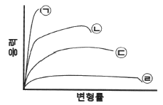
- ㉠
- ㉡
- ㉢
- ㉣
(정답률: 44%)
58. 다음 용융 슬래그 산화물 중 염기성이 가장 강한 것은?
- P2O5
- Fe2O3
- TiO2
- CaO
(정답률: 30%)
59. 강을 오스테나이트 영역으로 가열한 후 담금질하면 생성되는 조직은?
- 펄라이트
- 시멘타이트
- 마텐자이트
- 오스테나이트
(정답률: 50%)
60. 강의 뜨임처리(tempering)에 관한 설명으로 옳은 것은?
- 담금질한 강철을 급냉시켜 재질을 경화한다.
- 조직이 변화가 오스테나이트에서 펄라이트로 변한다.
- 불안정한 마텐자이트조직을 A1변태점 이상으로 가열하여 처리한다.
- 담금질할 때 생긴 내부응력을 제거하고 인성을 증가시킨다.
(정답률: 43%)
4과목: 용접구조설계
61. 다음 중 용접공수에 해당되지 않는 것은?
- 간접공수
- 운반공수
- 가용접공수
- 본용접공수
(정답률: 47%)
62. 다음 중 피닝법의 주목적이 아닌 것은?
- 잔류 응력의 완화
- 용접 변형의 경감
- 용착 금속의 균열 방지
- 가공경화에 따은 취성 증가
(정답률: 46%)
63. 첫층 용접에서 루트 근방의 열 영향부에 발생하여 점차 비드 속으로 성장해 들어가는 새로 균열의 일종으로 용접부에 함유된 수소량이나 응력 등의 원인으로 발생하는 결함은?
- 설퍼 균열
- 루트 균열
- 라멜라티어
- 라미네이션 균열
(정답률: 44%)
64. 다음 중 일반적인 용접 구조 설계 순서로 옳은 것은?
- 기본계획 → 강도계산 → 구조설계 → 시공도면 → 재료적산 → 절차 사양서
- 기본계획 → 강도계산 → 시공도면 → 구조설계 → 재료적산 → 절차 사양서
- 기본계획 → 재료적산 → 구조설계 → 강도계산 → 시공도면 → 절차 사양서
- 기본계획 → 절차 사양서 → 강도계산 → 구조설계 → 시공도면 → 재료적산
(정답률: 39%)
65. 맞대기 이음에서 인장응력을 구하는 공식은?
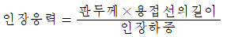
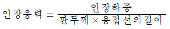
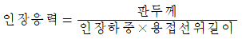
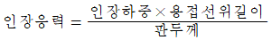
(정답률: 31%)
66. 로크웰 경도에서 시험하중이 150kgf 이며, 단단한 재료의 경도 측정에 사용되는 스케일로 가장 적합한 것은?
- A 스케일
- B 스케일
- C 스케일
- D 스케일
(정답률: 40%)
67. 필릿 용접 이음부의 루트 부분에 생기는 저온균열로 모재의 열팽창 및 수축에 의한 비틀림을 주원인으로 볼 수 있는 균열은?
- 토 균열
- 힐 균열
- 설퍼 균열
- 크레이터 균열
(정답률: 21%)
68. 용접 변형중 면외 변형이 아닌 것은?
- 각변형
- 회전변형
- 좌굴변형
- 세로굽힘변형
(정답률: 28%)
69. 현미경 시험용 부식제 중 구리합금에 사용되는 것은?
- 왕수
- 피크린산
- 수산화나트륨
- 염화제제2철용액
(정답률: 33%)
70. 일반적인 각변형의 방지대책으로 옳은 것은?
- 용접속도는 되도록 느리게 한다.
- 개선각도는 작업에 지장을 주지 않는 한도 내에서 크게 한다.
- 판 두께가 얇을수록 첫 패스 측의 개선깊이를 크게 한다.
- 판 두께의 개선형상이 일정할 때 되도록 용접봉 지름이 작은 것을 사용한다.
(정답률: 15%)
71. 용접 구보물의 조립순서를 정할 때 고려사항으로 적절하지 않은 것은?
- 장비의 취급과 지그의 활용을 고려한다.
- 변형 및 잔류응력을 경감할 수 있는 방법을 채택한다.
- 용접이음 형상을 고려하여 적절한 용접법을 선택한다.
- 가능한 큰 구속용접을 먼저 실시하고, 위보기 자세 위주로 용접을 한다.
(정답률: 55%)
72. 용접성을 이음성능과 사용성능으로 구분할 때 이음성능에 해당하는 것은?
- 용접 결함의 정도
- 용접변형과 잔류응력
- 모재 및 용접금속의 노치인성
- 모재 및 용접금속의 기계적 성질
(정답률: 21%)
73. 다음 그림은 어떤 용접 이음을 나타낸 것인가?
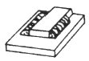
- 스롯 이음
- 맞대기 이음
- 플러그 이음
- 측면 필릿 이음
(정답률: 52%)
74. 가접 시 주의해야 할 사항 중 틀린 것은?
- 본 용접과 같은 온도에서 예열한다.
- 본 용접자와 동등한 기량을 갖는 용접자로 하여금 가접을 하게 된다.
- 용접봉은 본 용접 작업 시에 사용하는 것보다 약간 가는 것을 사용한다.
- 가접의 위치는 부품의 끝, 모서리 등과 같이 단면이 급변하여 응력이 집중되는 곳에 실시한다.
(정답률: 46%)
75. 다음 용착법 중 다층용접에서 층을 쌓는 방법이 아닌 것은?
- 비석법
- 덧살 올림법
- 전진 블록법
- 케스케이드법
(정답률: 35%)
76. 용접성 시험에서 용접 연성 시험으로만 짝지어진 것은?
- 킨젤 시험, 코마렐 시험
- 슈나트 시험, 샤르피 시험
- 카안인열 시험, 오스트리아 시험
- 피스코 균열 시험, 리하이형 구속 시험
(정답률: 24%)
77. 용접이음 설계 시 일반적인 주의사항으로 옳은 것은?
- 능률이 좋은 위보기 용접을 많이 할 수 있도록 설계한다.
- 용접작업에 지장을 주지 않도록 충분한 공간을 두어야 한다.
- 용접선은 될 수 있는 한 교차 되도록 하고 한쪽으로 집중되게 설계한다.
- 강도가 약한 맞대기 용접을 피하고 될 수 있는 대로 필릿 용접을 히도록 힌다.
(정답률: 51%)
78. 시험편의 연신율이 25% 이고, 늘어난 길이가 120mm 일 때 시험편 최초의 길이는?
- 46mm
- 72mm
- 96mm
- 102mm
(정답률: 47%)
79. 용접에 의한 변형을 미리 예측하여 용접하기 전에 용접 반대방향으로 변형을 주고 용접하는 방법은?
- 교호법
- 살수법
- 역변형법
- 석면포 사용법
(정답률: 52%)
80. 다음 중 열전도율이 가장 높은 금속은?
- Cu
- Mg
- Ni
- Zn
(정답률: 57%)
5과목: 용접일반 및 안전관리
81. 플래시 용접의 특징으로 옳은 것은?
- 지종재료의 용접이 불가능하다.
- 가열 범위가 넓고 열영향부가 많다.
- 용접시간이 길고 업셋 용접보다 전력소비가 크다.
- 용접면에 산화물 개입이 적으며, 용접면을 정밀하게 가공하지 않아도 된다.
(정답률: 42%)
82. 동 및 구리합금 용접이 철강용접에 비해 어려운 이유로 틀린 것은?
- 용접부에 기공이 쉽게 발생한다.
- 열전도율이 낮고 냉각속도가 작다.
- 산화동을 포함하면 균열이 생긴다.
- 산화동을 포함하면 융점이 낮아진다.
(정답률: 47%)
83. 아크 용접 작업의 안전사항 중 전격의 방지대책으로 틀린 것은?
- 땀, 물 등에 의한 습기찬 작업복, 장갑, 구두 을을 착용하고 용접한다.
- TIG 용접이나 MIG 용접기의 수냉식 토치에서 냉각수가 새어나오면 사용을 금지한다.
- 용접하지 않을 때는 금속 아크 용접봉이나 탄소 용접봉은 홀더로부터 제거하고 TIG 용접의 텅스텐 전극봉은 제거하거나 노즐 뒤쪽으로 밀어 넣는다.
- 맨홀 등과 같이 밀폐된 구조물 안이나 앞쪽이 막혀 잘 보이지 않는 장소에서 작업을 할 때에는 자동 전격 방지기를 부착하여 사용한다.
(정답률: 54%)
84. 피복 아크 배합제의 성분 중 아크 안정제의 종류에 속하지 않는 것은?
- 페로티탄
- 규산칼륨
- 산화티탄
- 탄산칼슘
(정답률: 20%)
85. 일렉트로 슬래그 용접에 관한 설명으로 틀린 것은?
- 스패터가 발생하지 않고 조용하다.
- 용접 홈의 가공 준비가 간단하고 각 변형이 적다.
- 알루미늄, 스테인리스강 등 주로 박판용접에 이용된다.
- 용접시간을 단축할 수 있으며 능률적이고 경제적이다.
(정답률: 44%)
86. 다음 중 일렉트로 가스 아크 용접에 사용되는 보호가스로 가장 적합한 것은?
- 헬륨 가스
- 질소 가스
- 아르곤 가스
- 이산화탄소 가스
(정답률: 39%)
87. 일반적인 연강판 점(spot) 용접에서 판두께가 0.4~0.6mm 일 때 최소 피치로 가장 적합한 것은?
- 2 ~ 3mm 정도
- 8 ~ 10mm 정도
- 15 ~ 20mm 정도
- 23 ~ 35mm 정도
(정답률: 27%)
88. 정격 2차 전류 300A, 정격사용율 40%인 아크용접기를 사용하여 실제 150A로 용접한다면 허용사용율(%)은?
- 1.6
- 160
- 640
- 6400
(정답률: 39%)
89. 가스용접에서 상요되는 아세틸렌가스의 폭발을 일으키는 물질(원인)과 가장 거리가 먼 것은?
- 아세톤
- 구리
- 압력
- 산소
(정답률: 32%)
90. 용접작업에 관한 안전사항 중 틀린 것은?
- 용접 시에는 반드시 보호장구를 착용할 것
- 용접작업장 주위에는 인화물질을 두지 말 것
- 아연도금 강판의 용접 시에는 안전상 환기장치를 차단시키고 할 것
- 빈 용기를 용접 할 때는 속에 위험한 가스나 증기가 있는지 점검할 것
(정답률: 60%)
91. 다음 중 피복 아크 용접봉 심선재의 화학성분에 속하지 않는 것은?
- C
- Al
- Si
- Mn
(정답률: 35%)
92. 용접장비 취급 시 주의할 사항으로 가장 거리가 먼 것은?
- 용접기 설치장소는 습기나 먼지가 없는 장소를 선택하고, 직사광선이나 비, 바람을 피해서 설치한다.
- 용접기의 수리나 단자 연결 시에는 배전반의 개폐기가 OFF 상태인지 확인한다.
- TIG용접에서 텅스텐 봉을 연마할 때는 보안경을 착용하고 숫돌차 정면에서 작업한다.
- 수랭식 용접기의 냉각수 순환장치는 항시 점검하여 일정한 수위가 되도록 한다.
(정답률: 60%)
93. 산소와 아세틸렌을 다량으로 사용할 때 매니폴드 장치를 설치하는데 있어서의 고려사항이 아닌 것은?
- 용기의 교환주기
- 순간 최대 사용량
- 필요한 산소병의 수
- 산소-아세탈랜의 혼합비
(정답률: 21%)
94. 가스용접 작업 중 점화시에 폭음을 발생시키는 원인이 아닌 것은?
- 아세틸렌의 순도가 높다.
- 가스 분출 속도가 부족하다.
- 혼합가스의 배출이 불완전하다.
- 산소와 아세틸렌 압력이 부족하다.
(정답률: 43%)
95. 용접의 분류에서 모재를 가열하고 압력을 가해 접합하는 방법이 아닌 것은?
- 초음파 용접
- 스터드 용접
- 스폿 용접
- 마찰 용접
(정답률: 22%)
96. 판두께가 10mm인 연강판을 가스용접 하려고 할 때 가장 적합한 용접봉의 지름은 몇 mm인가?
- 1.0
- 2.4
- 3.2
- 6.0
(정답률: 21%)
97. 탭 전환형 교류 아크 용접기의 특징으로 틀린 것은?
- 탭 전환부가 소손되기 쉽다.
- 작은 전류 조정 시 무부하 전압이 높다.
- 코일의 감긴 수에 따라 전류를 조정한다.
- 넓은 범위의 전류조정을 쉽게 할 수 있다.
(정답률: 35%)
98. 모재와 전극사이에 아크열을 이용하는 방법으로 용접작업에서 주된 에너지원은?
- 전기 에너지
- 가스 에너지
- 기계적 에너지
- 전자파 에너지
(정답률: 61%)
99. 일반적인 가스 텅스텐 아크 용접(GTAW)의 특징으로 틀린 것은?
- 가열범위가 적어 용접으로 인한 변형이 적다.
- 저 전류에서도 아크가 안정되어 박판용접에 적당하다.
- 용접하고자 하는 장소가 협소하여 토치의 접근이 어려운 용접부도 용접을 쉽게 할 수 있다.
- 부적당한 용접기술로 용가재의 끝부분이 용접 중 공기에 노출되면 용접부의 금속이 오염된다.
(정답률: 35%)
100. CO2 가스 용접 시 고전류 영역(약 200A이상)에서 팁과 모재 간의 거리 몇 mm 정도가 가장 적당한가?
- 0 ~ 5
- 5 ~ 10
- 15 ~ 25
- 25 ~ 35
(정답률: 27%)
쇳물의 부피 = 주물의 부피 = 중량 ÷ 밀도 = 1000 ÷ 7.2 = 138.89 m³
주물의 표면적 = (주물의 부피 ÷ 주물의 높이) = (138.89 ÷ 0.006) = 23,148.15 m²
주물의 두께에 따른 계수 = 1.86
쇳물의 주입시간 = (주물의 두께² × 주물의 표면적 × 계수) ÷ (4 × 쇳물의 유속) = (0.006² × 23,148.15 × 1.86) ÷ (4 × 쇳물의 유속)
따라서, 쇳물의 주입시간을 구하기 위해서는 쇳물의 유속을 알아야 한다. 이 문제에서는 쇳물의 유속이 주어지지 않았으므로 정확한 답을 구할 수 없다. 따라서, 주어진 보기 중에서 가장 가까운 값인 "58.82"를 선택해야 한다.